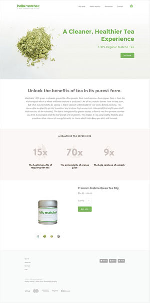

Imagining online sales is interesting but also scary. On the one hand, we see there are millions of internet users in the world, there is a big market here.
But on the other hand, it seems the way to start is complicated.
Even if there is a step by step that can be followed like folding origami, surely there are many offline sellers who come online.
Here is the guide.
After reading this article, you will know what you can do right now to start selling online.
Selling online now is very easy since there is a marketplace (online market). Such as Amazon, eBay, etc.
5 minutes from now, you can start selling and getting buyers. it's easy, right?
Even some sellers only rely on the marketplace or social media to sell, without creating their website.
Yes, You can... But there is a big weakness behind it.
First, the places of selling are not your own. Supposing you are riding in sales at other people's homes. As a result, your sales can be closed at any time.
Besides, you also look no different from other sellers. This is not good for the long term, because you will not be known.
Second, it is difficult to grow.
I often see people who 100% rely on social media to sell. The business is stable ... it doesn't run out of buyers, but there is no progress.
What is the solution? Use both.
Growing your website takes time, you can use the marketplace and social media to introduce them to your website.
Step # 0 - Don't know what you want to sell?
This is the biggest problem for people who want to do business.
(If you already know what to sell, proceed to step # 1)
The best choice for those who are willing to make a little more effort is making their products. Digital products are not difficult to make as long as you already know what capabilities you can make into products. Or you can also sell services. Other options become a reseller or drop shipper.
You have to solve this problem yourself ... because you know what you want to sell for long-term business.
Step # 1 - Build a sales website foundation
As mentioned earlier, selling at someone else's "home" is not enough. In the short term, it might work ... but not in the long term.
You have to have your website. Need fees ... for hosting and domains. But these costs are nothing compared to the income you will get from sales.
If you start without funds, 0 dollars, no need to directly create a website. Sell your first product/service and then use the money to build a website.
Talk about selling online, usually related to online stores or e-commerce.
Though maybe you don't need an online store.
Most people usually only sell 1-5 products online. If you are also like this, do not create an online store that has a variety of features.
The solution: make 1 page for 1 type of item.
So you make one sales page each for each product. This page contains the title, picture/video, explanation, and how to buy.
But if you have dozens of products, an e-commerce system will be easier.
1a. Without an online shop system
Once again, if you only sell 1-5 types of products/services. Pages like this are enough:

Even though you have never created a website before, creating a page like the one above only takes less than 10 minutes. Lots of guides on the internet.
Step # 2 - Build the foundation of social media
As a seller, of course, we have to invite buyers to come ... for that we will go to a place with many people, social media.
But remember..
Social media is a marketing and communication tool with customers, NOT as your main selling place.
Invite them to your website to buy.
Also, keep in mind that not all products/services can be successfully marketed with social media. Look again at your target market.
Some social media that are commonly used as a means marketing :
On Facebook, the engagement rate per post is only around 0.05-1%, while on Instagram it reaches 4.21%. Meaning your photos will get more interactions (in the form of comments/likes). That's why there are lots of active businesses on Instagram.Tips every time you send photos to Instagram: